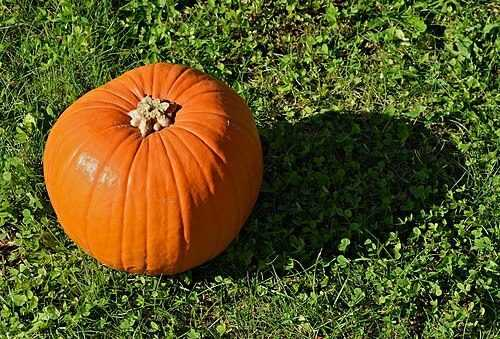

VOICE
こんな気持ちで待っています
お店のことをまだ知らない人の「行ってみたい」を、制作側が創作したものです。
以下は制作側が考えた創作のイメージ例で、実在のお客様の投稿ではありません。実際の口コミ・評価とは関係ありません。
営業時間などが分かったら、行ってみたいです。それまでは、Instagramの更新を楽しみにしています。
近くまで行く機会があれば、朝ごはんを目当てに寄ってみたいです。まずはInstagramをのぞいて、どんなお店か知りたいです。
丘の上のカフェと聞いて気になりました。お店のことが分かったら、ぜひ行ってみたいです。
実りの季節のイメージ
「行ってみたい」という気持ちに添える、果物と実りの写真です。


